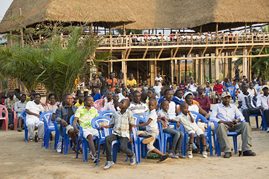

La 5ème édition d’Isanganiro Award a été emportée par Eric Nshimirimana alias Spok’s Man pour sa chanson « Burundi ». La deuxième place est revenue à Léonard Niyomwungere avec le morceau « Ikiganza ». En troisième position est venue Natacha avec la chanson « Uburundi bwacu ».
La Radio Isanganiro a pour la 5ème fois organisé la compétition de la chanson de l’année. Une chanson d’un artiste burundais qui est choisi par les auditeurs mais aussi par des ingénieurs du son.
Au total, 10 chansons de 10 chanteurs burundais se sont retrouvées en finale. Sous un soleil doux, au bord de la plage La Costa Beach (Sud de Bujumbura), samedi 10 septembre, c’est la clôture de la 5ème édition de la compétition "Isanganiro Award". Beaucoup de musiciens sont présent, une soirée bien agrémentée semble être garantie.
L'invité spécial est la vedette, le géant de la musique burundaise "Kidumu". Bien que le décor et les artistes promettent un bon moment, le public n'est pas nombreux. Sous le son du Hip Hop des stars comme B Face on the Flow, Fabi love et le jeune Kévin qui rappelle les débuts du grand Big Fizzo sur certaines de ses premières chansons comme "Sitopenda tena" ou "Ngwino", l'ambiance est totale
17h30 : le moment temps attendu approche. Christian Nsavye et Cynthia Ngendakuriyo appelle l'invité d'honneur (Kidumu) pour la proclamation des nomminés. Tout le monde retient son souffle. Seuls les trois premiers seront primés.
A la troisième place, Natacha Ngendabanka avec « Uburundi bwacu », seconde place revient à Léonard Niyomwungere avec la chanson "ikiganza". Le grand gagnant, Spok’s Man avec sa fameuse chanson "Uburundi". Une paticularité qui s'est manifesté: parmi les 10 chanteurs en finale, seul Yves Kamikiwe était présent

Le mot du jour a été dite par Eduige Mbonimpa , Directrice de l'association "Ijambo". Elle a tenu à rappeler l'évolution de la musique burundaise avec l'avènement de nouveaux styles de musique. Elle a encouragé les artistes à travailler ardemment pour que la musique burundaise atteigne le rang international.
Comme si la musique ne suffisait pas, la comédie n'a pas manqué pour agrémenter la soirée. De l’humour avec Luc-Noël Ingabire, acteur dans la Troupe Pili-pili, le public qui commençait à s'ennuyer s’est réveillé en une minute rire sous le vent du lac. Un « one man show » à la Gad Elmaleh.